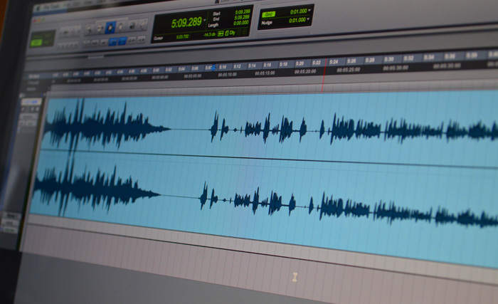
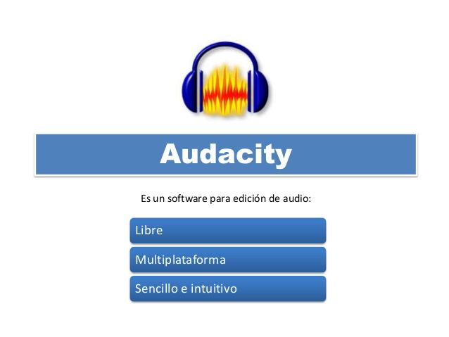

En mi opinión, es necesario aprender a utilizar una aplicación de edición de sonido porque hoy en día la informática esta muy presente en el mundo laboral y cuantas más cosas sepas hacer más utilidad tendrás en el mundo laboral.
Dentro de las aplicaciones de edición de sonido escogería Audacity porque es muy completa a la hora de ofrecer opciones para editar. Además Audacity es una aplicación gratuita y por lo tanto es accesible para todo el mundo. Audacity también es una aplicación de software libre, lo que proporciona a los usuarios una capacidad super amplia a la hora de interactuar con el programa y además la capacidad de mejorarlo entre todos sus usuarios para hacerlo un programa más completo.
 